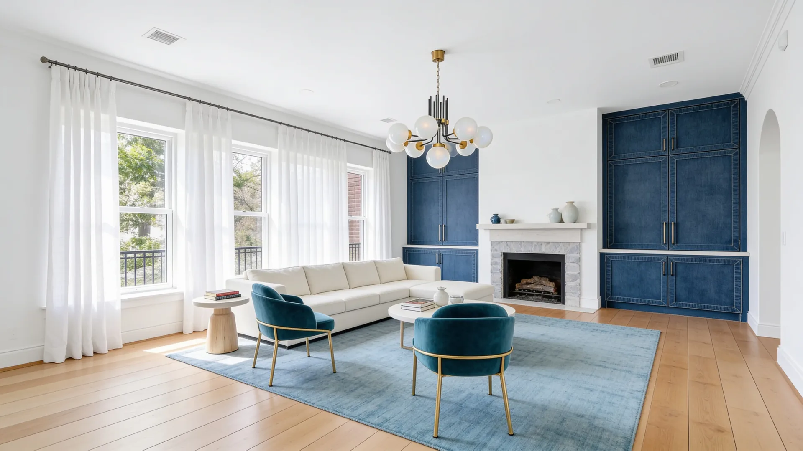

Featured home tour · Oak Cliff, TX · Renovation + Addition · 2025
Cavender
A full-home renovation and addition, reworked for light, flow, and the way the family actually lives.
Step inside →
A boutique Dallas studio helping you experience self-care through peaceful, functional design, considered for the way you actually live.


Some rooms simply function. Yours should restore you.
Hi, I'm Brittany. I run a boutique interior design studio that has served the Dallas area since 2016: full renovations, ground-up builds, and considered redesigns, an intentionally small number at a time.
Beautiful spaces matter. It matters just as much to me that your home brings more peace to your life. Everyone deserves a personal sanctuary for comfort and restoration.
The philosophy
Every project begins with listening: to how you move through your mornings, where the light falls, what makes a house finally feel like rest. What follows is peaceful, functional, and unmistakably yours. A home that helps you experience self-care, every day.
Sheer layers, warm dimmers, and window treatments tuned to how the light actually falls in your rooms.
Rooms that work hard quietly, with a considered place for everything your family reaches for daily.
Workroom-made treatments and touchable textures, measured and made for the room they live in.
Residential interior design projects across Dallas–Fort Worth.
Residential interior design services across Dallas–Fort Worth. A small studio means every selection gets my full attention: keys to keys, or one considered room at a time.
The existing floor plan stays; every finish is reconsidered. Project leadership from demolition to the day you move back in.
Selections and planning from blueprint to move-in, working alongside your builder so the home feels considered from the studs out.
Furnishings, paint, and accessories for the home you already love. Cosmetic, no structural work, all the warmth.
The two hardest-working rooms in the house, planned and finished to feel calm and function hard.
Paint, flooring, and custom window treatments, measured and made to the room. Light, exactly the way you want it.
Also available: roofing installations & insurance-based replacements. See all services →
How it works
Five steps from first hello to the day we pull back the curtain. Clear, transparent, and paced to your life.
Complimentary. Tell me about your home and where you'd like it to go.
$350. I walk your space and we shape the scope together, in person.
Design boards 3–4 weeks after deposit. Renderings available for major work ($300–$500).
Every item is inspected and stored safely at our Dallas warehouse.
Trades coordinated to the reveal: the best part of the whole process.
From the heart of Dallas to the northern suburbs: a boutique studio close enough to be hands-on with every detail.
Studio · 1300 S. Polk Street, Suite 166, Dallas, TX 75224 · Mon–Fri 10–5 · All service areas
Glowing remarks
Brittany was a joy to work with. Punctual, professional, and she coordinated the entire project with great precision and proficiency. She has my highest recommendation.
I decided to treat myself by hiring a designer to redo my home office. Brittany completely exceeded my expectations. Now I build an extra 5–7 minutes into my Zoom meetings for the compliments about my fabulous new room.
Brittany was amazing to work with. She captured our style instantly and carried it throughout our home. The quality of work is impeccable. We'll absolutely use her again.
The practical side of working together, in plain terms. Anything else, ask on the discovery call.
All questions →The first conversation, a discovery call, is complimentary. If we're a fit, the next step is a $350 in-home consultation where I walk your space and we shape the scope together.
The studio is based in Dallas and works across DFW: Dallas, Highland Park, University Park, Oak Cliff, Plano, Frisco, McKinney, Allen, and Aubrey among them.
Yes, both. Full renovations with project leadership from demolition to move-in, and new-construction selections and planning alongside your builder. Redesigns and single-room refreshes are welcome too.
Design boards arrive 3–4 weeks after deposit. Overall timelines depend on scope: a single-room redesign moves quickly, while renovations and new builds follow construction schedules. We map the timeline together before work begins.
Free resource
Pricing structures, project timelines, and the questions clients wish they'd asked sooner, sent straight to your inbox.
Or read the investment overview.
@brittanylyonsinteriors_


Begin
Tell me about your home and where you'd like it to go. The first conversation is always free, with no obligation to continue.
We're likely a good fit if
Here's to your way of living.